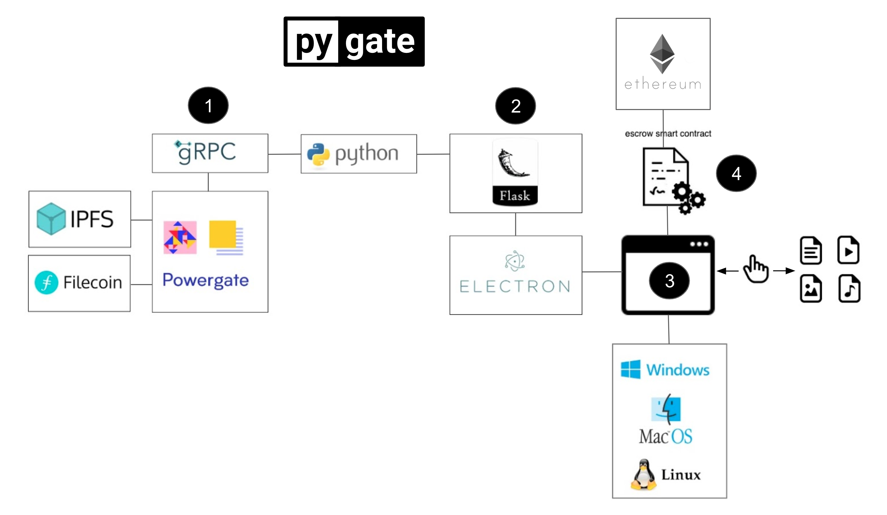

Python interface & tools
for the Filecoin network


for the Filecoin network
The project is divided into four phases with its own deliverable. Each is intended to serve as a stand-alone component that can be used in other projects.

The Pygate components are currently in active development and not yet available for release. You can follow progress in our Github repositories, including their wikis. Read more about their requirements below.

pow help
pow ffs create
pow ffs addrs list
pow ffs addToHot [filename]
pow ffs push --watch [CID]
pow ffs log [CID]
pow ffs info [CID]
pow ffs config default
pow ffs push [CID] -c [custom_cidconfig.json] -o
pow ffs get [CID]
pow wallet balance pow wallet new pow wallet switch